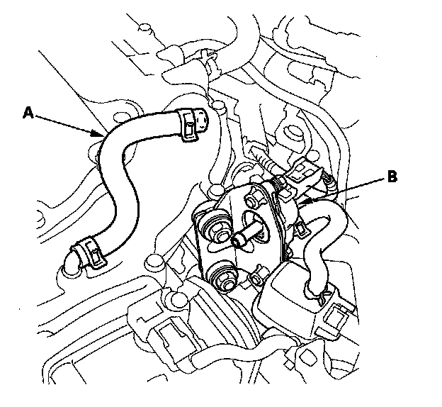
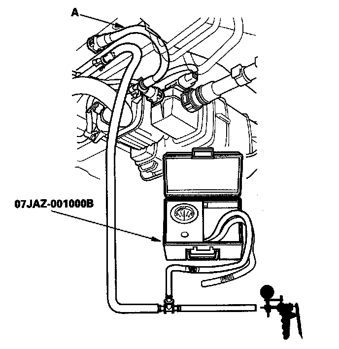
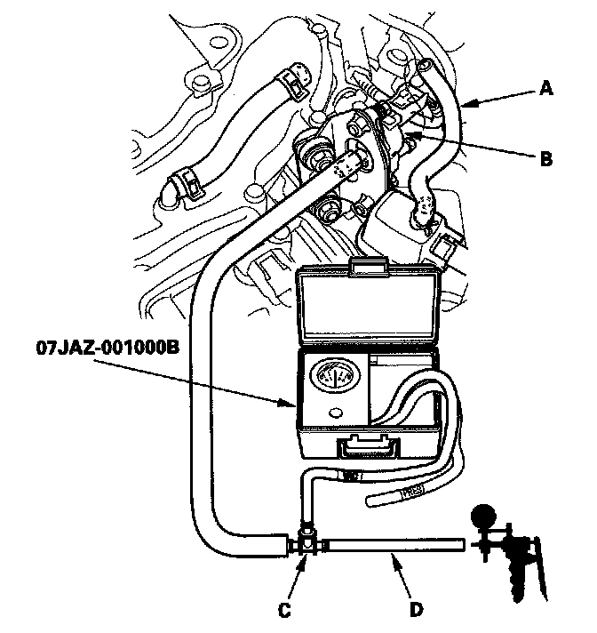
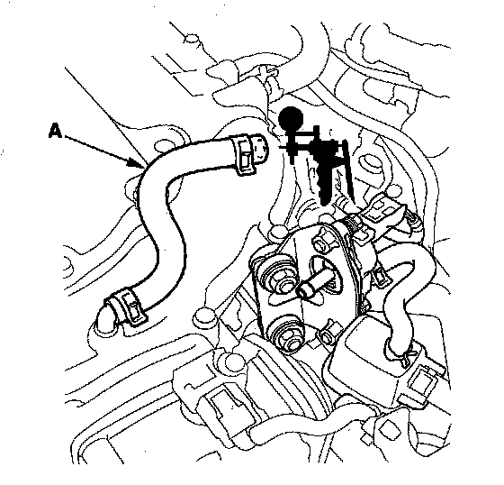
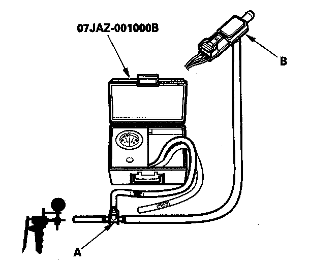

DTC Troubleshooting
DTC P0497: EVAP System Low Purge FlowSpecial Tools Required
- Vacuum pump/gauge, 0 - 30 in.Hg, Snap-on YA4000A or equivalent, commercially available
- Vacuum/pressure gauge, 0 - 4 in.Hg, 07JAZ-001000B
NOTE: Before you troubleshoot, record all freeze data and any on-board snapshot, and review the general troubleshooting information.
1. Turn the ignition switch ON (II).
2. Clear the DTC with the HDS.
3. Select EVAP FUNCTION TEST in the INSPECTION MENU with the HDS.
Is the result OK?
YES - Intermittent failure, the system is OK at this time. Check for poor connections or loose terminals at the FTP sensor and the PCM.
NO - Go to step 4.
4. Check for poor connection, blockage, or damage at the EVAP canister purge line between the throttle body and the EVAP canister.
Is the line OK?
YES - Go to step 5.
NO - Reconnect or repair the EVAP canister purge line, then go to step 23.

5. Disconnect the vacuum hose (A) from the EVAP canister purge valve (B).

6. Disconnect the vacuum hose (A) from the purge line (at the EVAP canister side), and connect the vacuum pump/gauge, 0 - 30 in.Hg, to the hose as shown.
7. Apply about 2 kPa (0.6 in.Hg, 15 mmHg) of vacuum to the hose.
8. Select EVAP PCS ON in the INSPECTION MENU with the HDS.
Does the vacuum release immediately?
YES - Go to step 14.
NO - Go to step 9.
9. Select EVAP PCS OFF in the INSPECTION MENU with the HDS.

10. Disconnect the vacuum hose (A) from the EVAP canister purge valve (B). Connect the T-fitting (C) from the vacuum gauge and the vacuum pump/gauge, 0-30 in.Hg, to the hose (D) as shown.
11. Apply about 2 kPa (0.6 in.Hg, 15 mmHg) of vacuum to the hose.
12. Turn the ignition switch ON (II).
13. Select EVAP PCS ON in the INSPECTION MENU with the HDS.
Does the vacuum release immediately?
YES - Check for blockage in the vacuum hose between the EVAP canister purge valve and the EVAP canister, then go to step 23.
NO - Replace the EVAP canister purge valve, then go to step 23.

14. Connect the vacuum pump/gauge, 0 - 30 in.Hg, to the vacuum hose (A) as shown.
15. Start the engine, and let it idle.
Is there vacuum?
YES - Go to step 16.
NO - Check for blockage in the vacuum hose between the EVAP canister purge valve and the throttle body, then go to step 23.
16. Turn the ignition switch OFF.
17. Remove the FTP sensor with its connector connected.

18. Connect a T-fitting (A) from the vacuum pump/gauge, 0 - 30 in.Hg, and the vacuum pump to the FTP sensor (B) as shown.
19. Check and record the FTP SENSOR reading in the DATA LIST with the HDS.
20. Slowly apply about 1.3 kPa (0.4 in.Hg, 10 mmHg) of vacuum to the hose.
NOTE: Be careful not to exceed the vacuum. If you do, the FTP sensor can be damaged.
21. Check the FTP SENSOR in the DATA LIST with the HDS.
Does the value change?
YES - Check for debris or blockage at the EVAP canister port, then go to step 23.
NO - Go to step 22,
22. Replace the FTP sensor.
23. Reconnect all hose.
24. Turn the ignition switch ON (II).
25. Reset the PCM with the HDS.
26. Do the PCM idle learn procedure.
27. Do the EVAP FUNCTION TEST in the INSPECTION MENU with the HDS.
Is the result OK?
YES - Troubleshooting is complete.
NO - Check for poor connections or loose terminals at the FTP sensor and the PCM, then go to step 1.